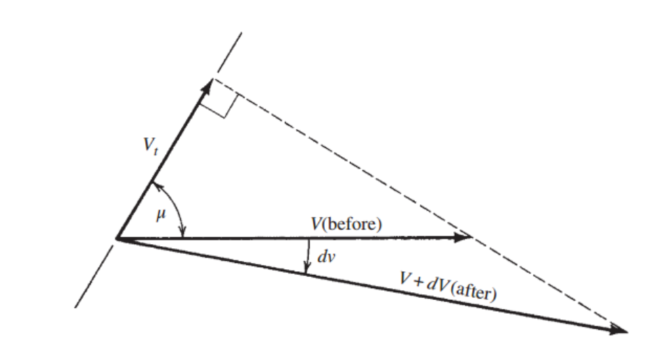
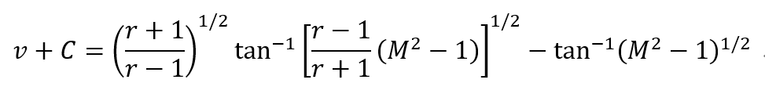
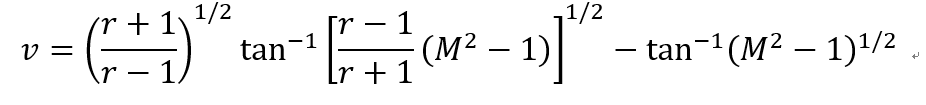
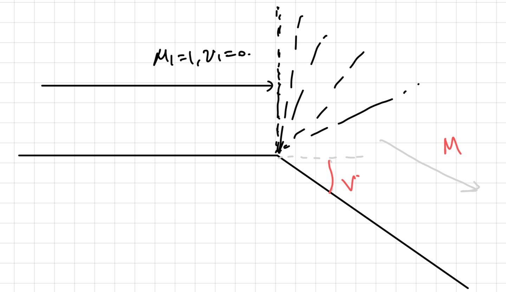
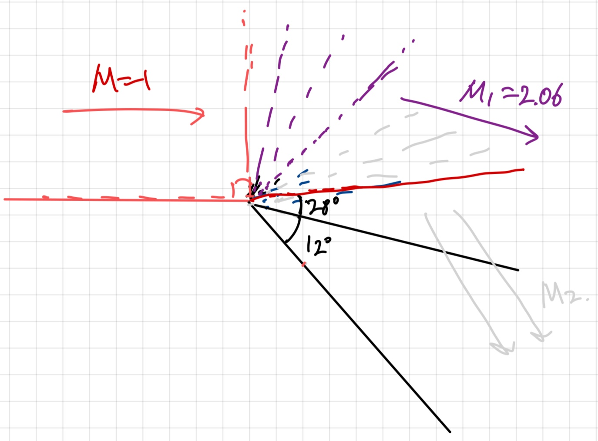

[Gas Dynamics] Ch 8 Prandtl-Meyer Flow - Expansion Flow
전 포스터에서는 Prandtl-Meyer Compression flow에서
해석하다가 Isentropic process임을 알고 그 반대 과정인
Prandtl-Meyer Expansion flow
가 존재한다는 것을 확인했다.
이제 Expansion flow을 수학적으로 표현해보자.
[그림과 같이 dv만큼 기울어진 Sharp convex turn 을 유체가 지난다고 하자]
![[Gas Dynamics] Ch 8 Prandtl-Meyer Flow - Expansion Flow](./images/img-001.png)
Compression wave와 마찬가지로 사실 wave는 무한개 이다.
위 그림은 그 많은 wave중 단 한개의 wave만 관찰 한것.
그경우 deflection angle과 마찬가지로 dv = 0에 근접 할 것이다.
그리고 그 수많은 dv가 모여서 총 deflection angle을 이루어
총 기울어진 convex turn 각도를 이루는 것이다.
[이해가 되지 않는다면 이전 poster compression wave]
다시, 본론으로 가서
속도벡터들을 하나의 점으로 모아 보면
![[Gas Dynamics] Ch 8 Prandtl-Meyer Flow - Expansion Flow](./images/img-002.png)

Compression flow의 deflection angle과 같은 역할을 하므로 dv = 0에 근접한다.
![[Gas Dynamics] Ch 8 Prandtl-Meyer Flow - Expansion Flow](./images/img-004.png)
cos을 전개후 대입해주면 다음 과 같이 dv를 표현 할 수 있다.
![[Gas Dynamics] Ch 8 Prandtl-Meyer Flow - Expansion Flow](./images/img-005.png)
여기서 u는 Mach angle임을 잊지 말아야 한다.
why?
지금 Expansion은 Compresion wave 의 reverse과정이므로 정확히 wave가 동일하다.
이전 포스터에서 Compression wave는 모두 Mach wave
즉,
θ = mach angle(u) 임을 확인 하였다.
따라서, sin(u) = 1/M 이므로
![[Gas Dynamics] Ch 8 Prandtl-Meyer Flow - Expansion Flow](./images/img-006.png)
위 식에서 dV/V를 M에 관한 식으로 바꿔주자
![[Gas Dynamics] Ch 8 Prandtl-Meyer Flow - Expansion Flow](./images/img-007.png)
위 식에서 dT/T를 M에 관한 식으로 바꿔주자
[4단원 Stagnation&Static Temperature with M)
![[Gas Dynamics] Ch 8 Prandtl-Meyer Flow - Expansion Flow](./images/img-008.png)
Energy equation by Stagnation Enthalpy
ht = h + 1/2 V^2 +
gz
에서 neglect potential, Ideal gas case
CpTt = CpT +1/2 (M^2*a^2)
a^2 = rRT, Cp=rR/(r-1) 을 대입하면 위 식이 나온다.
위 식 양변을 미분해주면
Isentropic proces 이므로 no heat transfer, no shaft work
-> dTt = 0
![[Gas Dynamics] Ch 8 Prandtl-Meyer Flow - Expansion Flow](./images/img-009.png)
![[Gas Dynamics] Ch 8 Prandtl-Meyer Flow - Expansion Flow](./images/img-010.png)
이제 dV/V식에 대입 해주고 처음 dv/v식에 대입해주면
![[Gas Dynamics] Ch 8 Prandtl-Meyer Flow - Expansion Flow](./images/img-011.png)
위식을 정적분 해주면 (C: Constant)

C를 제거 하기 위해서 기준점 M=1일때 v=0이라고 하자.
따라서, 최종 v=f(M,r)식

이 각도 v가 정확히 의미 하는 바를 알아야 한다.
밑 사진처럼 v=0일때는 Inlet과 속도방향이 같다.
Therefore, as M=1일때 v=0이라고 기준점을 설정하였으므로,
M=1가 Inlet일때 나중 마하속도가 M, 그때의 기울어진 각도가 v

결국 v = f(M,r) 식이므로
착한 과학자들이 M에 따른 v값을 Isentropic Table에 포함 시켰다^^
위 식 외우면 바보라는 말.
[예제 문제 하나를 풀어보고 완벽하게 이해해보자]
![[Gas Dynamics] Ch 8 Prandtl-Meyer Flow - Expansion Flow](./images/img-015.png)
기본적인 v와 M의 정의에 따라서 문제를 풀어야 한다.
M2 부분의 v = 12이니까 Table v=12일때 M 구하면 될까??
v와 M의 정의에서 inlet M = 1 but v=12인 경우는 M inlet = 2.06이다.

따라서 문제를 위 그림처럼 28도 시계방향으로 돌려서 관찰해보자.
M = 1 에서 M1을 거쳐 M2로 기울어진 다라고 사고 하는 것이다.
그럴 경우 Inlet M = 1 로 정의에 부합하고
v = v1 + v2 = 40도
임을 알 수 있다.
따라서 Table로 값을 알 수 있고 v = 40 인경우 M2 = 2.54이다.